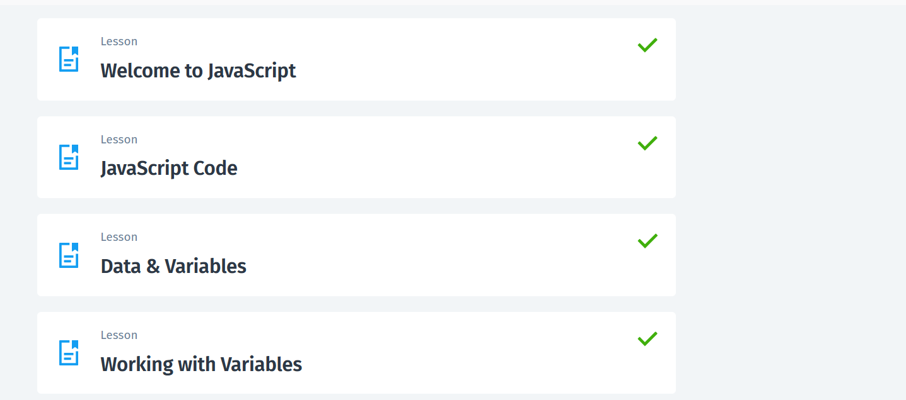

<!-- JavaScript არის პროგრამირების ენა, რომელიც ძირითადად გამოიყენება ვებსაიტებზე ინტერაქტიულობის დასამატებლად. -->
<!-- MERN Stack არის ვებ-დეველოპმენტის ტექნოლოგიების ერთობლიობა, რომელიც შედგება :MongoDB, Express.js, React, Node.js. MongoDB  ინახავს აპლიკაციის მონაცემებს, Express.js ამუშავებს მოთხოვნებს, React.js ქმნის და მართავს ვებსაიტის ინტერფეისს, Node.js JavaScript-ის გაშვება სერვერში. -->
<!-- js კოდის წერა: Inline JavaScript, Internal JavaScript, External JavaScript -->
<html>
    <body>
        <!-- ღილაკზე დაკლიკებისას alert box-მა უნდა გამოიტანოს თქვენი ასაკი -->
        <button onclick = "alert('14')">CLICK HERE</button>
        
        <!-- როდესაც სურათს დააკლიკებთ, მას უნდა შეეცვალოს src ატრიბუტის მნიშვნელობა -->
        
    </body>
</html>